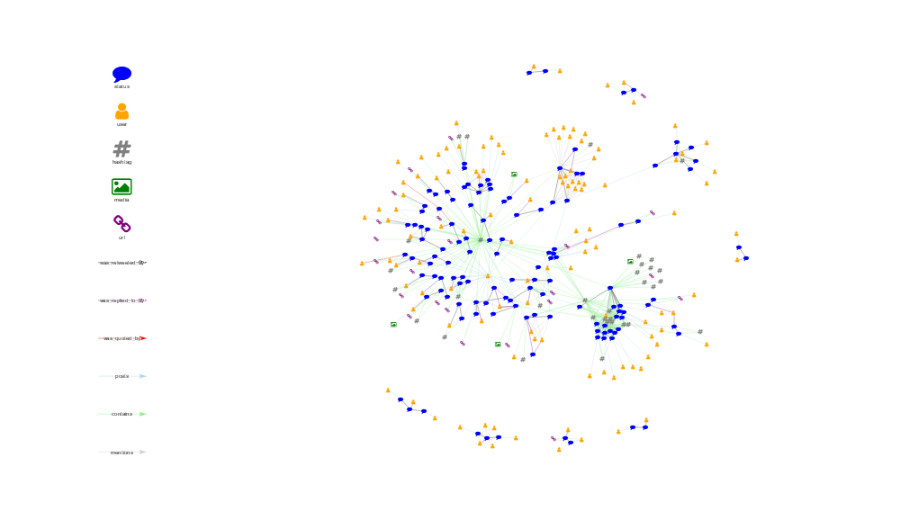
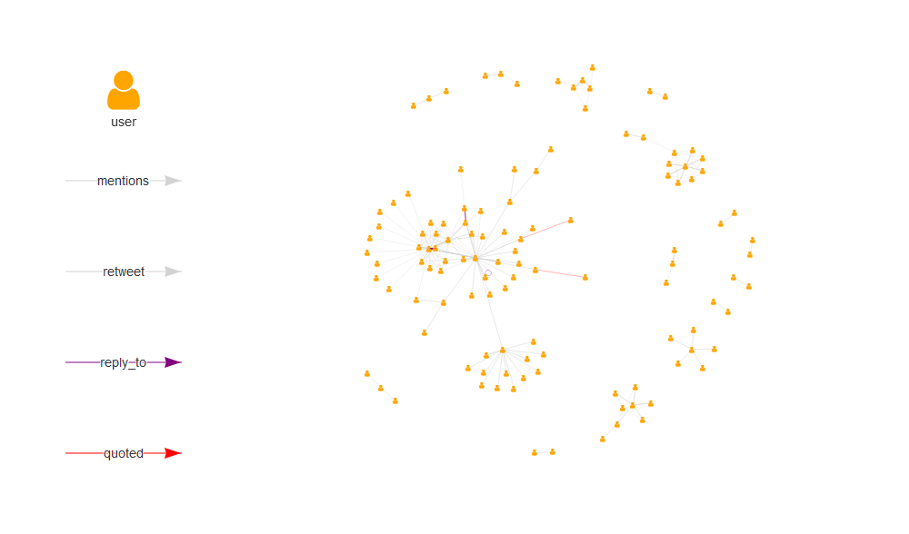

Usage
Knowledge Graph
as_knowledge_graph_primitive()
#> # A tibble: 306 x 22
#> name timestamp_ms created_at text source lang node_class TWITTER_NAME
#> <chr> <dbl> <dbl> <chr> <chr> <chr> <chr> <chr>
#> 1 1173~ 1568649504. 1568649448 "RVi~ R sta~ en status <NA>
#> 2 1173~ 1568649504. 1568649422 "RVi~ R sta~ en status <NA>
#> 3 1173~ 1568649504. 1568647794 "@vi~ R sta~ en status <NA>
#> 4 1173~ 1568649504. 1568647775 "@RL~ R sta~ en status <NA>
#> 5 1173~ 1568649504. 1568649386 "I w~ R sta~ en status <NA>
#> 6 1173~ 1568649504. 1568649418 I go~ Twitt~ en status <NA>
#> 7 1173~ 1568649504. 1568649407 "amo~ rstat~ en status <NA>
#> 8 1173~ 1568649504. 1568649407 "whe~ rstat~ en status <NA>
#> 9 1173~ 1568649504. 1568649408 "the~ rstat~ en status <NA>
#> 10 1173~ 1568649504. 1568649406 "The~ rstat~ en status <NA>
#> # ... with 296 more rows, and 14 more variables: screen_name <chr>,
#> # location <chr>, description <chr>, url <chr>, protected <lgl>,
#> # followers_count <int>, friends_count <int>, listed_count <int>,
#> # statuses_count <int>, favourites_count <int>,
#> # account_created_at <dbl>, verified <lgl>, profile_url <chr>,
#> # account_lang <lgl>#> # A tibble: 780 x 6
#> source target time source_class action target_class
#> <chr> <chr> <dbl> <chr> <chr> <chr>
#> 1 117362296888~ 117362696767~ 1.57e9 status was_retwe~ status
#> 2 117362160717~ 117362685851~ 1.57e9 status was_retwe~ status
#> 3 117361885492~ 117362002836~ 1.57e9 status was_retwe~ status
#> 4 117361757457~ 117361994782~ 1.57e9 status was_retwe~ status
#> 5 117362079738~ 117362670659~ 1.57e9 status was_retwe~ status
#> 6 117362486884~ 117362679679~ 1.57e9 status was_retwe~ status
#> 7 117362468618~ 117362679561~ 1.57e9 status was_retwe~ status
#> 8 117362522338~ 117362679791~ 1.57e9 status was_retwe~ status
#> 9 117362379331~ 117362679205~ 1.57e9 status was_retwe~ status
#> 10 117362362091~ 117362679094~ 1.57e9 status was_retwe~ status
#> # ... with 770 more rows
as_knowledge_igraph()
#> IGRAPH d07fe6c DN-- 306 780 --
#> + attr: name (v/c), timestamp_ms (v/n), created_at (v/n), text
#> | (v/c), source (v/c), lang (v/c), node_class (v/c), TWITTER_NAME
#> | (v/c), screen_name (v/c), location (v/c), description (v/c), url
#> | (v/c), protected (v/l), followers_count (v/n), friends_count
#> | (v/n), listed_count (v/n), statuses_count (v/n),
#> | favourites_count (v/n), account_created_at (v/n), verified
#> | (v/l), profile_url (v/c), account_lang (v/l), time (e/n),
#> | source_class (e/c), action (e/c), target_class (e/c)
#> + edges from d07fe6c (vertex names):
#> [1] 1173622968880177153->1173626967675084802
#> + ... omitted several edges#> IGRAPH d080f99 DN-- 306 780 --
#> + attr: name (v/c), timestamp_ms (v/n), created_at (v/n), text
#> | (v/c), source (v/c), lang (v/c), node_class (v/c), TWITTER_NAME
#> | (v/c), screen_name (v/c), location (v/c), description (v/c), url
#> | (v/c), protected (v/l), followers_count (v/n), friends_count
#> | (v/n), listed_count (v/n), statuses_count (v/n),
#> | favourites_count (v/n), account_created_at (v/n), verified
#> | (v/l), profile_url (v/c), account_lang (v/l), time (e/n),
#> | source_class (e/c), action (e/c), target_class (e/c)
#> + edges from d080f99 (vertex names):
#> [1] 1173622968880177153->1173626967675084802
#> + ... omitted several edges
Cite
#>
#> To cite tweetgraph use:
#>
#> Knapp, B. G. (2019). tweetgraph: Tweet Graph Structures for
#> Network Analysis Data. R package version 0.0.0.9 Retrieved from
#> https://knapply.github.io/tweetgraph
#>
#> A BibTeX entry for LaTeX users is
#>
#> @Manual{tweetgraph-package,
#> title = {tweetgraph: Tweet Graph Structures for Network Analysis},
#> author = {Brendan Knapp},
#> year = {2019},
#> note = {R package version 0.0.0.9},
#> url = {https://knapply.github.io/tweetgraph},
#> }


Social Network Analysis
as_socnet_primitive()as_socnet_network()as_socnet_igraph()